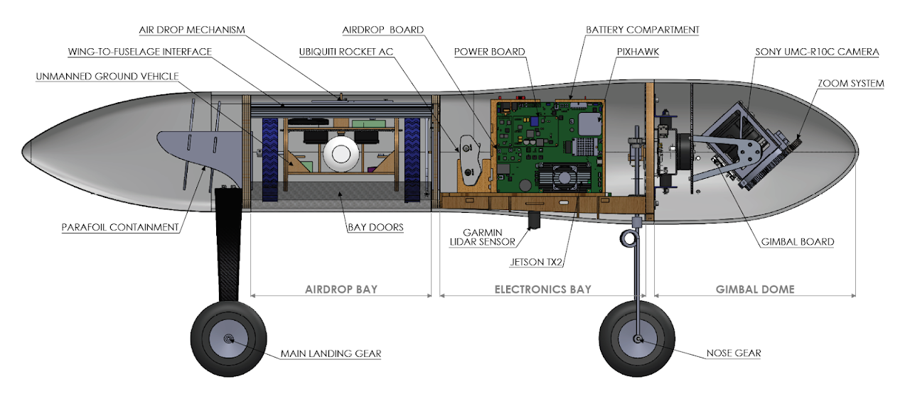
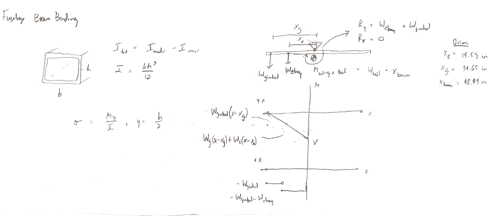
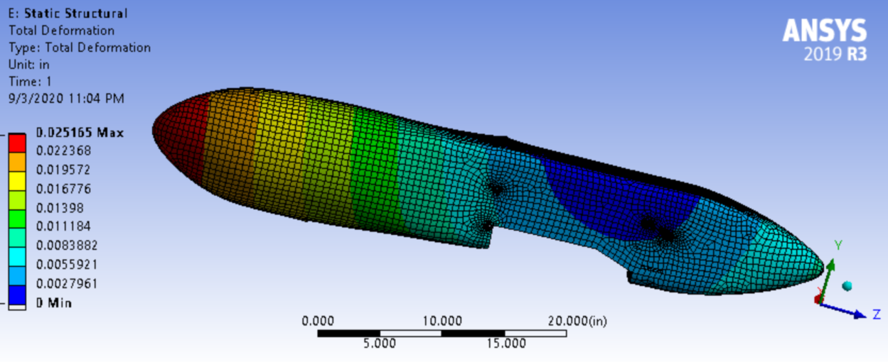
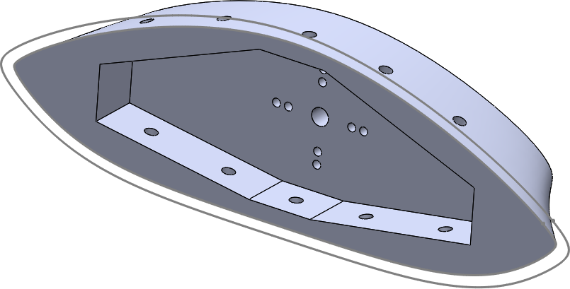
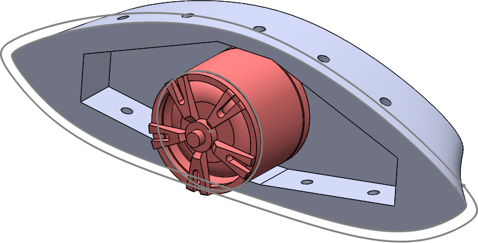
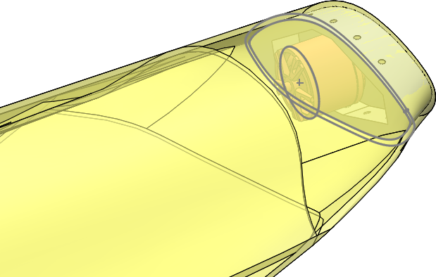

During the Spring 2020 semester, after I finished the UGV Wheel project, I was tasked with designing the internal structure for our next aircraft at CUAir, which will be a vertical takeoff-and-landing plane. I began my project with a review of typical aircraft designs and concluded that our previous aircraft, Orion, had a semi-monocoque structure. Its structural carbon fiber sandwich composite skin was supplemented by an internal wooden framework that housed flight hardware. Orion is pictured on the right.

Orion's internal structure.
While Orion's structure was very effective, I suspected that the internal structures did not need to be as strong as they were. Some of the wooden framework was supporting the weight of the aircraft when the carbon fiber composite could have done the same. So, for this project, I set out with the goal of optimizing our internal structure as much as possible by minimizing the usage of internal support and maximizing the usage of the carbon fiber skin.
In order to verify that the skin was strong enough to support the weight of the aircraft, I began with a basic static analysis of the fuselage as a hollow rectangular beam in bending. With some help from an upperclassman on my team, I was able to verify that the maximum deflection of the beam was well within an acceptable limit, and the safety factor was greater than one.

An excerpt of the analysis of the fuselage as a beam in bending.
With the initial analysis done, I presented my findings to the team with a plan: construct the next aircraft with as little supplementary internal structure, relying instead on the structural skin. Internal structure will exist only wherever it is needed for mounting aircraft hardware and for reinforcing critical areas, such as the wing-to-fuselage connection. To further reinforce this decision, I learned to use ANSYS ACP to model the composite skin and analyze it using Structural FEA. My initial analysis showed that the fuselage skin has a very high safety factor and an acceptable maximum deformation (around 0.5 mm) without any reinforcement. As expected, the minimum safety factor occurs at the mounting holes, which will be reinforced with potted inserts.

The ANSYS results that show strain in the composite skin.

The pusher prop mount viewed in SolidWorks.
While I was performing the fuselage analysis, I began the other part of this project: designing mounting structures for our payloads, which include the camera gimbal, the Unmanned Ground Vehicle (UGV) winch, the electronics bay, and the pusher prop mount. I began with the pusher prop mount. The mount was modeled to follow the curves of the inside of the fuselage skin so that the mount slides in and fits snugly. Bolts will be inserted and secured using potted inserts on the fuselage skin, and the motor will bolt onto the mount.

The prop mount with the motor in red. I also CADed the motor from scratch using the manufacturer's dimensions.

The prop mount and motor viewed in context inside the fuselage skin (yellow).
This project is ongoing during the Fall 2020 semester.